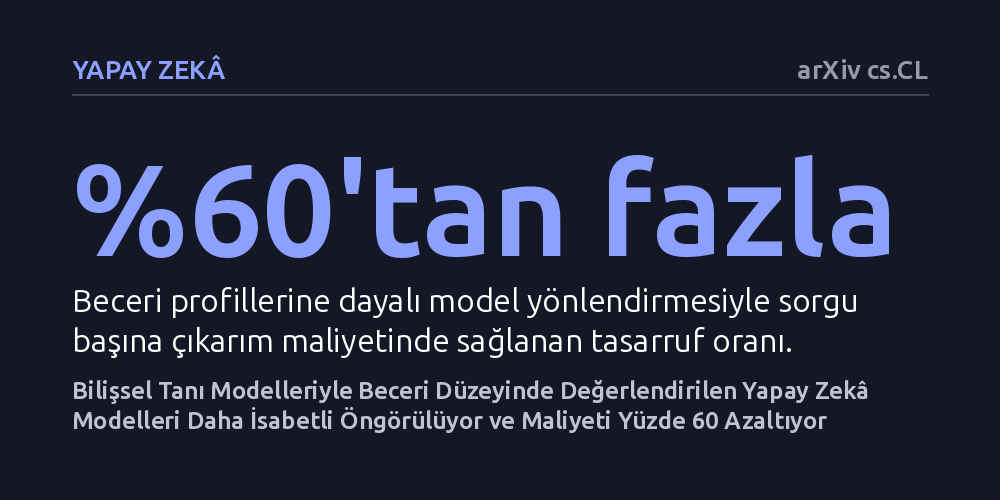

YAPAY-ZEKA · arXiv cs.CL · 2026-10-23
Araştırmacılar, büyük dil modellerini tek bir test puanı yerine psikometrideki bilişsel tanı modelleriyle alt beceri düzeyinde değerlendiren SkillEval çerçevesini geliştirdi. 3.811 modeldeki deneyler, bu yöntemin yeni sorulardaki model başarısını daha isabetli öngördüğünü ve model yönlendirme maliyetini yüzde 60'tan fazla düşürdüğünü kanıtladı.
Yapay zekâ modellerinin genel bir puanla değil, tıpkı insan zihni gibi alt bilişsel becerilere ayrılarak değerlendirilmesi gerektiğini ve bu ayrımın işletme maliyetlerini yarıdan fazla azaltabileceğini gösteriyor.

Yapay zekâ alanında her geçen gün yeni bir büyük dil modeli duyuruluyor ve bu modelleri karşılaştırmak için yüzlerce sorudan oluşan test paketleri kullanılıyor. Ancak günümüzdeki liderlik tabloları ve standart değerlendirme yöntemleri, modellerin bu testlerdeki tüm yanıtlarını toplayıp tek bir genel başarı puanına indirgiyor. Bu yaklaşım, karmaşık bir üniversite sınavına giren bir öğrenciye yalnızca toplam netini söyleyip hangi konularda zayıf veya güçlü olduğunu gizlemeye benziyor. Gerçekte ise aynı ortalama puana sahip iki modelden biri karmaşık matematiksel akıl yürütmede çok iyiyken, diğeri yalnızca metin içi kuralları takip etmekte başarılı olabiliyor.
Modelleri tek bir skora indirgemek, yapay zekâyı gerçek hayatta kullanan mühendisler ve kurumlar için ciddi bir verimsizlik yaratıyor. Kullanıcı bir soru sorduğunda, o sorunun hangi alt becerileri gerektirdiğini ve eldeki modellerden hangisinin bu özgül beceride uzman olduğunu bilmediğinden, genellikle işi şansa bırakmamak adına en büyük ve en pahalı modeli çalıştırıyor. Bu durum hem muazzam bir sunucu maliyetine yol açıyor hem de modellerin gerçek yetenek sınırlarının doğru anlaşılmasını engelliyor. Dolayısıyla modelleri tek boyutlu bir ortalamadan kurtarıp zihinsel beceri haritalarını çıkaracak bir yönteme duyulan ihtiyaç giderek büyüyor.
Araştırmacılar bu kör noktayı aşmak için eğitim bilimleri ve psikolojide uzun yıllardır öğrencilerin öğrenme açıklarını belirlemek amacıyla kullanılan bilişsel tanı modellerini (CDM) yapay zekâya uyarladı ve SkillEval adını verdikleri yeni bir değerlendirme çerçevesi kurdu. Psikometride uygulanan bu modeller, sınav sorularının gerektirdiği örtük beceriler ile testi çözen bireyin bu becerilerdeki ustalık düzeyini birbirinden bağımsız olarak hesaplayabiliyor.
SkillEval iki aşamalı bir yöntem izliyor. İlk aşamada, dil modellerinin kendi üstbilişsel yeteneklerinden yararlanılarak test sorularının gerektirdiği alt beceriler otomatik olarak ayrıştırılıyor ve yorumlanabilir beceri etiketlerine dönüştürülüyor. İkinci aşamada ise psikometrik bilişsel tanı algoritmaları devreye girerek her bir dil modelinin bu becerilerdeki yetkinlik katsayısını hesaplıyor. Sonuçta ortaya genel bir sınav notu yerine, modelin her bir bilişsel becerideki gücünü ve zayıflığını açıkça gösteren çok boyutlu bir yetenek profili çıkıyor.
Önerilen yöntemin güvenilirliğini sınamak amacıyla matematik, akıl yürütme ve genel bilgi gibi farklı alanları kapsayan beş büyük test kümesinden (MATH, BBH, GPQA, MuSR, IFEval) toplam 9.523 soru ve 3.811 farklı dil modeli incelendi. Deney sonuçları, SkillEval ile oluşturulan beceri profillerinin, modellerin daha önce hiç görmediği yeni sorulardaki davranışlarını geleneksel ortalama puanlama yöntemine kıyasla çok daha yüksek isabetle tahmin edebildiğini gösterdi.
Araştırmacılar bu beceri haritalarının pratik faydasını iki temel görevde kanıtladı. İlk olarak 'model yönlendirme' uygulamasında, sisteme gelen her soru gerektirdiği beceriye göre analiz edildi ve tüm soruları en pahalı modele çözdürmek yerine, o beceride yetkin ancak daha küçük ve verimli bir modele yönlendirildi. Bu dinamik yönlendirme sayesinde model performansı artarken çıkarım maliyeti yüzde 60'ın üzerinde azaldı. İkinci olarak 'bilgisayarlı uyarlanabilir test' senaryosunda, yeni bir modelin binlerce soruyu çözmesine gerek kalmadan, yalnızca birkaç hedefli soruyla beceri profilinin hızla ve düşük hesaplama gücüyle çıkarılabileceği gösterildi.
SkillEval tarafından üretilen ayrıntılı profiller, dil modellerinin iç dinamiklerine dair çarpıcı içgörüler de sağladı. Örneğin temel dil modelleri ile bunların talimat eğitimi verilmiş (instruction-tuned) türevleri karşılaştırıldığında, eğitimin modelin temel akıl yürütme becerilerini baştan yaratmadığı, daha ziyade belirli kural takip etme ve yönergeye uyma becerilerini keskinleştirdiği somut olarak gözlemlendi. Ayrıca popüler test kümelerinin hangi ortak becerileri paylaştığı ortaya çıkarılarak yapay zekâ testlerindeki gereksiz tekrarların haritası çıkarıldı.
Bu bulgular, yapay zekâ geliştirme ve kullanma biçimimizi doğrudan etkileme potansiyeline sahip. Modelleri 'her işi mükemmel yapan tek bir devasa sistem' olarak konumlandırmak yerine, farklı bilişsel görevlerde uzmanlaşmış modellerden oluşan bir yapı kurup bunları akıllıca yönlendirmek hem çok daha ekonomik hem de daha şeffaf bir çözüm sunuyor.